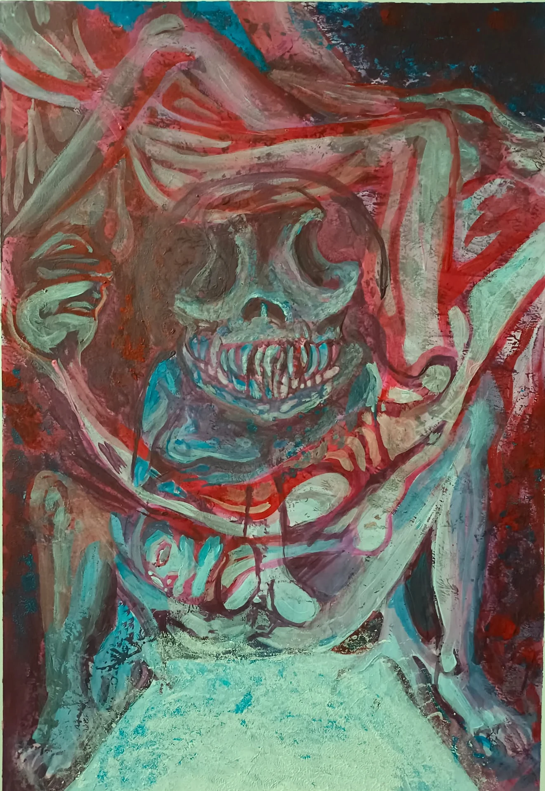
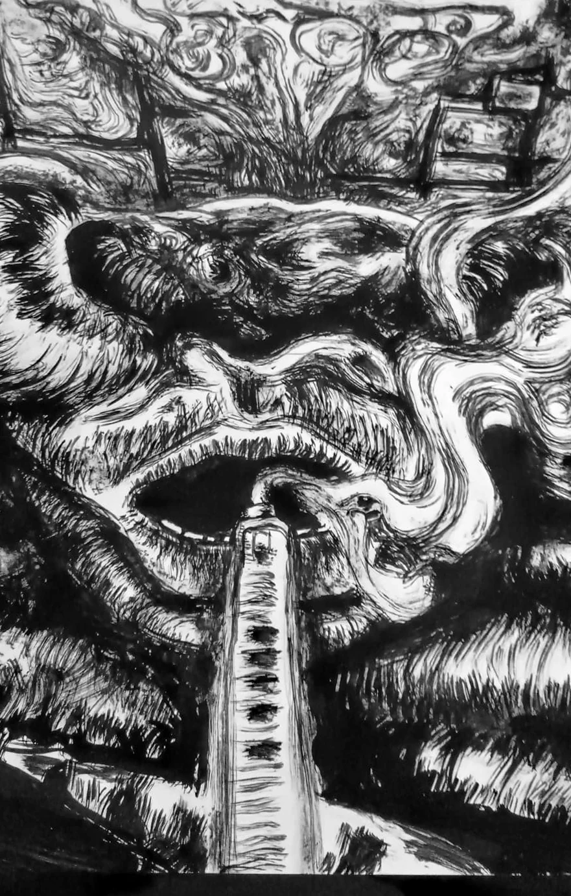

Die Kunst der Verwandlung / 01
Simon
Ernst
Nirnberger.
Zeichnung und Malerei.
Zwischen Körper, Struktur und Abstraktion.

01 / Die IdeeEine Einladung, genauer hinzusehen.
Nicht alles,
was Form hat,
hat einen Namen.
13 Werke ✳ 02 TechnikenDie Sammlung ansehen
02 / Werkschau
Ausgewählte
Arbeiten.
13 / 13 Werke
Eine Auswahl aus Zeichnung und Malerei. Jedes Bild erzählt seine eigene Geschichte – in Farbe, Form oder Linie.
13 Werke werden angezeigt.
Ende der Auswahl / 13 ArbeitenMehr zur Person
03 / Zwischen den Linien
Es gibt
immer mehr
zu sehen.

04 / Zur Person
Der Mensch
hinter den
Werken.
Ein Raum für eigene Bilder, offene Deutungen und das Unerwartete.
Platz für die Künstlerbiografie. Hier können später persönliche Worte zu Arbeitsweise, Materialien, Inspiration und Ausstellungen ergänzt werden. Dies ist bewusst noch kein erfundener Lebenslauf.
Kontakt aufnehmen05 / Kontakt & Austausch
Ein Bild ist
ein Anfang.
Für Gespräche, Anfragen oder einen Austausch über die Arbeiten.
Kontaktadresse hier ergänzen
Vor Veröffentlichung bitte echte Kontaktdaten einsetzen.